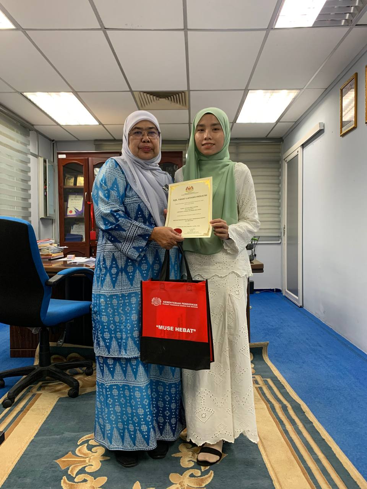

I completed my industrial training for the IMD310 subject at the Pejabat Pendidikan Daerah (PPD) Gua Musang for a duration of two months. Throughout the training,
I was given the opportunity to learn and apply various skills related to information management and administrative work in a real working environment. My tasks
included handling official documents, assisting in managing records, organizing files, and updating databases. I also gained experience in using office software
and was involved in several departmental programs. This internship has improved my communication skills, taught me to work in a team, and helped me better
understand how government departments operate..